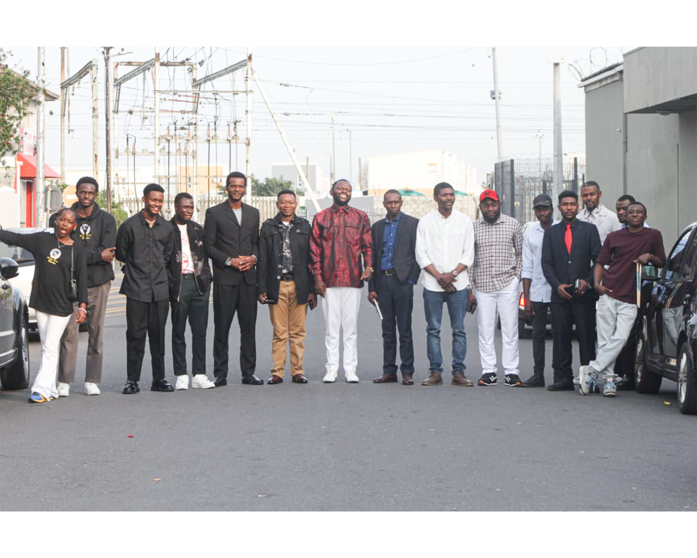
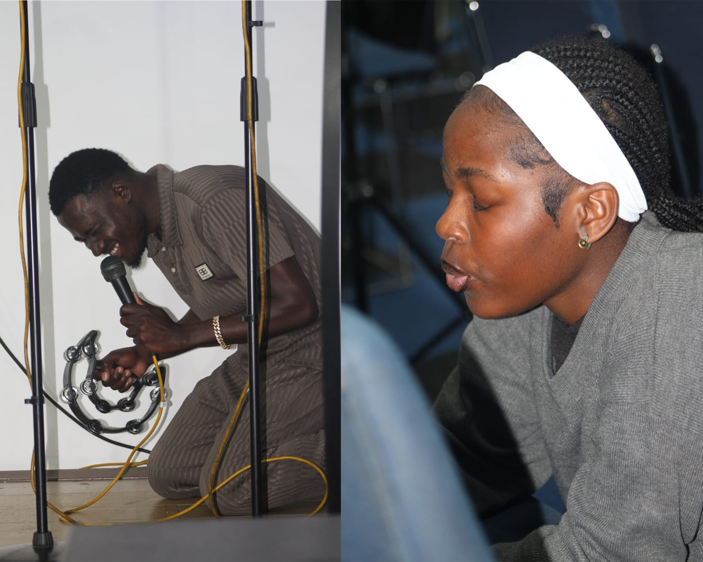
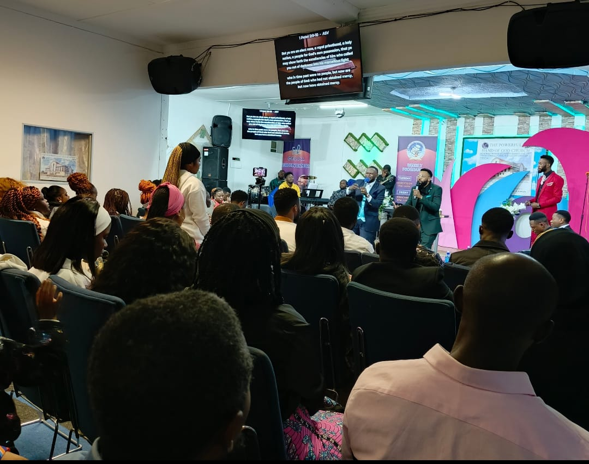

The Story of Our Church
Faith, resilience, and decades of serving our community
Cap-town branch story
As part of the 5th Community of Pentecostal Churches in Africa (5ème CELPA), our Cape Town branch carries forward a rich heritage of vibrant worship, deep faith, and genuine Christian community. We are a spiritual home for members of the Diaspora, local families, and anyone seeking a place to grow in the Word of God. Grounded in the truth of 1 Samuel 7:12—“Thus far the Lord has helped us”—we gather to exalt Jesus Christ through passionatE multilingual praise, life-transforming biblical teaching, and intentional fellowship. Whether you are looking for a prayer family, a place to serve, or a spiritual refuge, you are warmly invited to join us as we journey together in faith.

Our mission
Our mission at 5th CELPA EBENEZER is to go tell, teach and proclam the good news all around the world .
To glorify God by proclaiming the Gospel of Jesus Christ, making devoted disciples, and nurturing a Spirit-filled community anchored in faith, hope, and love. Rooted in our legacy within the Communauté des Églises Libres de Pentecôte en Afrique, we are dedicated to transforming lives through passionate worship, sound biblical teaching, and practical outreach. We exist to serve as a beacon of light—empowering individuals, supporting families, and standing as a spiritual home for all who seek God’s presence.

Looking Ahead
Our branch in cap-town has been active for a year now and is hosting prayer sessions and sunday services to help our community grow close to God,
